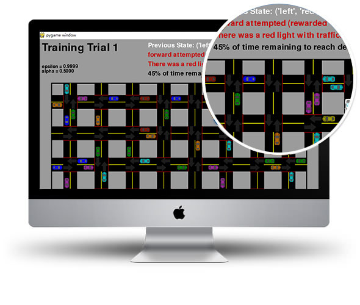

SmartCab
This is a project about training a Smartcab to drive by itself which based on reinforcement learning. The template code has already given by the others. I aid in my analysis of the Smartcab and my implemented learning algorithm.

This is a project about training a Smartcab to drive by itself which based on reinforcement learning. The template code has already given by the others. I aid in my analysis of the Smartcab and my implemented learning algorithm.
In this project, I work towards constructing an optimized Q-Learning driving agent that will navigate a Smartcab through its environment towards a goal. Since the Smartcab is expected to drive passengers from one location to another, the driving agent will be evaluated on two very important metrics: Safety and Reliability. A driving agent that gets the Smartcab to its destination while running red lights or narrowly avoiding accidents would be considered unsafe. Similarly, a driving agent that frequently fails to reach the destination in time would be considered unreliable. Maximizing the driving agent's safety and reliability would ensure that Smartcabs have a permanent place in the transportation industry.
Safety and Reliability are measured using a letter-grade system as follows:
With no training and the cab choose the actions randomly, the safety rating and the reliability rating both get a grade of F.
After I define a state and expect the diving agent to learn a policy for each state, I have an optimal action for every state the agent can occupy. Then I begin implementing the functionality of Q-Learning itself. After long time of learning, the agent finally achieve a successful result of the grade of A+ and A.